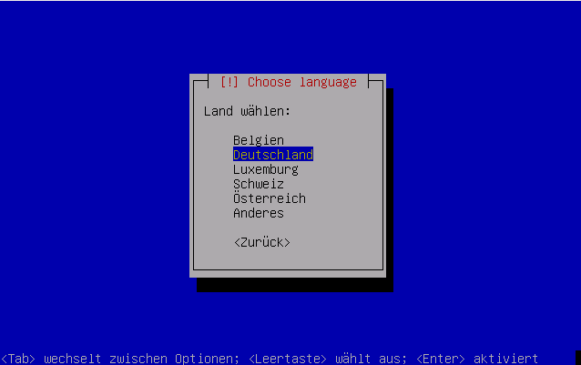

Booten
Falls die Standardeinstellungen der Installation geändert werden müssen, (etwa die Sprache oder die Bildschirmeinstellungen), so kann dies durch Drücken der entsprechenden F-Tasten getan werden (das F-Tastenmenü am unteren Ende der Bildschirmausgabe beachten).
| Einstellungen | ||
| Taste | Auswahl | Beschreibung |
| F1 | Help | Zeigt den Hilfe-Index an |
| F2 | Language | Hier kann man die Installationssprache auswählen. Nach der Änderung ändert sich das grafische Installer-Menü auch auf diese ausgewählte Sprache. |
| F3 | Keymap | Hier lässt sich das Tastatur-Layout einstellen |
| F4 | VGA | Bildschirm-Auflösung |
| F5 | Accessibility | Barrierefreie Einstellungen |
| F6 | Other Options | Weitere Optionen. Hier kann man dem Kernel weitere Optionen mitgeben |
Sollten diese Optionen nicht ausreichen, kann man mit der ESC-Taste Esc das grafische Installer-Menü abbrechen und gelangt zu dem Textmodus-Installer. Dort kann man mit den F-Tasten weitere Optionen abfragen.
Sobald die Einstellungen den Bedürfnissen entsprechend konfiguriert sind, kann man durch Wählen der gewünschten Option mit der Installation fortfahren. Daraufhin wird der Installer starten und man sollte einige Textnachrichten für etwa zwei Sekunden aufleuchten sehen. Dann wird man auch schon vom Sprachenwählbildschirm begrüßt.

Die Sprache mit den Pfeiltasten auswählen und ⏎ drücken. Es ist der eigene Standort zu wählen.

Jetzt sollte das Keyboard-Layout (die Tastaturbelegung) ausgewählt werden; dabei ist zu bedenken, dass dies nicht unbedingt mit der gewählten Sprache übereinstimmen muss.

- Erstellt mit Inyoka
-
 2004 – 2017 ubuntuusers.de • Einige Rechte vorbehalten
2004 – 2017 ubuntuusers.de • Einige Rechte vorbehalten
Lizenz • Kontakt • Datenschutz • Impressum • Serverstatus -
Serverhousing gespendet von